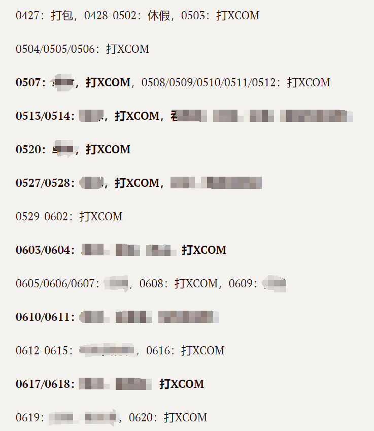
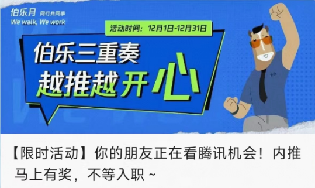

癸卯年大概不是一个特别好的年份，总体来说自己在原地踏步，并且越发体验到time flies very fast。无论怎么说写文章总是要有一个开头的，那这便是一个不太好的开头了 :D
记忆撷珠
今年年初我开了一个笔记，专门记录每天下了班以后干什么。实践证明我的自制力比自己想象的要差得多，比如如果要问我时间都去哪了，翻一下5月，好像整个5月都在打游戏……

**嗯，主要是XCOM真的太好玩了。**我对一款游戏的机制非常上瘾就会一直玩，玩到想吐直接弃坑。这样的休克疗法会造成我经常在一款游戏上花太多时间挤占了我正常处理其他事情的时间。所以同事跟我讲哪个游戏很好玩推荐我去玩的时候我第一反应都是NONONO，万一这游戏好玩我接下来一个月啥都别干了……
XCOM是一个例子，下半年上线的瓦罗兰特是另一个例子。上线以后公司内网认识了一些朋友有一段时间回家就开黑，快乐是真的很快乐，直到有一天幡然醒悟自己原来也是在用打游戏逃避一些事情。
自制力还是太差，sigh。
统计了一下去年的LOG，发现我的问题主要不是效率太低（当然效率低也是一个问题），而是大多数时间都去打游戏了。我自诩自己不是一个游戏瘾大的人，上本科的时候基本上已经不怎么打游戏了，而从日志分析来看并不是这样。从这个侧面我也进一步理解了为什么人对自己的评价和别人对自己的评价差异会如此之大的原因。
去年值得记忆的还有一些友人来访，甚至于还有一位友人我跟他说你现在来啥都看不着的时候跟我说“没事，去看你嘛”。方知有朋自远方来，不亦乐乎的确是人生一大享受。
跟友人交谈总体感觉大家都是在往更高处走，有的完成了学业走上了工作岗位，有的事业上也有突破，为自己的好朋友开心是真的很开心呀。
年底提离职的间隙回了一趟母校，惊觉日复一日的生活已经让我失去了对时光流逝的感知，有几位自己想要拜访的恩师早在几年前就退休了。对“常回家看看”这句话于是有了新的理解。这段经历值得单开篇聊聊，等寒假发出来吧。
关于成长和职业上的思考
年底我离职了，没有拿年终奖就离职了。
从刚参加工作的笨手笨脚到工作两年以后的渐入佳境，到今年上半年工作开始进入了瓶颈期，整个一年几乎都是在做一些非常繁琐而又不得不做的工作。
其实对自己工作状态的不满已经积怨已久，而我总是不愿意面对。从外部环境来说很少会有人考虑在这个环境里跳槽，即使是跳槽的朋友也很少会有21年（可以称之为流金岁月了）的非常夸张幅度的加薪。每个人都会跟我说“苟住”，仿佛离了这份工作自己就会怎么样一样，而这份工作就是一个避风港，自己仿佛就是一艘小船，需要“等”到风浪过去再出港海阔凭鱼跃。
然而“苟住”真的是最安全的吗？我认为不是。
国内互联网人的职业生涯是非常短和卷的，这可能也是很多在国外的朋友不太愿意回国的原因。大抵上是存在“在XX岁需要达到YY职位负责WW业务年薪ZZ万”这一个尺度的。这个尺度在平时工作的时候感觉不到，但是一旦遇到组织架构调整（高情商说法，洋人还有一个文雅的用词叫reorg，低情商：整个部门被一锅端）你的下家就会用这个尺打量你，在这个尺度以下的人会被打上低潜的标签，迎接自己的就是人才梯度的靠后（最后被裁员）和跳槽被压价。
这个环境对每个人来说的最优解就是持续寻找增量：升职OR做核心项目OR加薪。事实上这三者有一个能拿到那么这份工作就值得继续做下去。如果都拿不到那还是趁早走为上。
项目可以有很多，黄了可以再开一个，自己的青春只有一次。
自己做到后面承担的是繁琐的工作固然是因为自己没有赢得领导的信赖，自己工作方面还有不少欠缺，这块我不会给自己找借口，没有做好是没有做好，希望下一份工作能让别人觉得我更加靠谱一些。
这一年我也有尝试进行一些自我迭代，有一些新的想法会记到笔记里。记笔记切记要对自己诚实，毕竟这玩意只有自己会看，自己就不要欺骗自己了嘛。
下面是我的笔记的一部分：
1. 需求要先对好，可以预期的可以不做的一定要坚决拒绝；
2. 别人做好的功能一定要亲自过目一下，再给领导看；
3. 时刻记住领导最关心的任务是什么，定期汇报进展。该任务如果有进展尽快做好下一步工作；
4. 说话不要太强势，让别人多说；
5. 一定不要有优越感，自信和优越感是两回事。如果别人没有明确表示接受那么大概率就是拒绝，话题可以就此打住了；
6. 要对数据敏感，常用的数据、数量级要记在脑子里。
在我们的项目又一次延期以后我终于停下来反思自己的处境，而当时非常碰巧有一个新机会摆在我的面前，这成了我提出离职的导火索——嗯，世界就是这么奇妙。
等自己有了离职的想法以后，看什么都感觉很喜感，比如你的腾讯朋友正在看机会 :D

新的工作并不是像现在一样做游戏开发，坦白来说年届而立的时候换一个行业还是需要勇气的，这意味着自己从本科开始的专业积累（除了一些编程方面的前置知识和经验）几近清零。但是很奇怪我并没有在换行业这件事情上纠结特别多，过去上学的转专业、工作换项目的经历已经让我养成了“反正到时候都要现学的，就比谁学的快而已”的自信。
从个人观察来看IT行业大多数的技术性工作从入门到成为一个熟练工只需要1-3年，大多数人的3年经验和8年经验没有区别。这中间的区别就是雇主愿意给员工的涨薪溢价以及自己不会陷入35岁危机的一张手牌。
说到35岁危机，推荐一个我今年看到的深刻影响我的公众号：重远投资观。该号主的一些结论在我脑海里只是模糊的想法，而他可以把这些想法用清晰的语言表达出来，这也是我为什么会为这位博主知识付费的原因。
举一例比较有代表性而我也认同的观点，实际上该观点炒过股的人应该都不觉新鲜：
房价来自于边际成交价格。一套房子的价值并不取决于其成本（建筑成本，土地出让金等等都包含在内），而是取决于同小区其他房子的成交价格，而成交价格来自于预期（类比：股价来自于市场预期）
从这个逻辑出发可以推断出技术值不值钱也是同理，技术本无贵贱，技术的价值取决于雇主给员工支付的工资，而这又取决于劳动力市场中该技术的边际成交价格（这取决于市场热点，劳动力供求等多方面）。说人话就是：价值来自于共识。
男怕入错行亦是此理。
在增量赛道上持续寻找增量（升职/核心工作），意识到增量不在的时候果断切换赛道（跳槽/转行），这或许是破解35岁危机的一个办法吧。
这对单身汉是很可以操作的，但是对于有家室的人来说需要考虑的因素更多。我也深知我现在可以折腾的privilege来自于自己还没有成家，那就尽量多折腾点这样可以让自己以后的小家庭过得更好一些吧。
今年看到一句稻盛和夫的话
人们总是把幸福解读为“有”，有车，有房，有钱，有权；但幸福其实是“无”，无忧，无虑，无病，无灾
深以为然。
解放思想，实事求是，团结一致向前看
我从去年开始去掉了年终总结立flag的习惯，因为我意识到在随机游走的环境中立一个确定的flag是不太靠谱的事情，比如换行业这个选项从来没有在我的脑海中出现过。
前日读到了友人写的一篇文章：为什么要慢慢变富，深以为然，摘录如下
众所周知我们的人生就是一场概率的游戏，这个说法我都说过无数次了。天降横财、一夜荣华、时来运转的概率和买彩票差不多。相对于这些不确定的事情，我们能掌握的可能是那些收益率低于 5% 的事情。这些事情可大可小，可以跟金融相关也可以跟自身提升相关，总之有正向收益的事情，你都可以把它理解成增加确定性的事情，也即增加概率的事情。比如：
定投你看好的大盘指数
去机会更多的城市生活
定期健身，健康饮食
认识更多的人
学习跨行业的知识等。
我和他一样有一种自己以后一定会过上好日子的自信，毕竟老子穷了那么久了，就想换个显卡不眨眼，咋就不行了。而我也认为不去立一些flag而做概率上能让自己以后过上更好的日子是正确的。
在这里斗胆化用邓公的话，希望自己新的一年继续做到“解放思想，开动脑筋，实事求是，团结一致向前看”：
解放思想：不要给自己设置条条框框，突破总是发生在不那么规矩的地方；
开动脑筋：只要思想不滑坡，办法总比困难多；
实事求是：诚实面对自己，诚实面对客观世界，一切从客观规律出发（P,S,，私以为马斯克是一个很实事求是的人）；
团结一致向前看：团结可以团结的人，多行善事，找双方利益的共同点，一起将饼做大，成就他人也是成就自己（这一点比较像柯维的互赖理论，后文推荐阅读里面有这本书）
写到这里开始真实地对明年的自己充满了期待。
癸卯年冬月廿三是为记。
附记①：去年开始通过腾讯公益为春蕾计划每个月捐100，然后公司配捐的钱投入到了另一个赡养老人的公益项目中，按照现在主流的舆论我算不算是一个真正的女权主义者（笑）。
附记②
今年读了什么
一点题外话：今年11月的时候偶然刷到了文石出了BOOX Note X3新品，刚好赶上首发，问了一下同事国产电纸书怎么样，同事纷纷反映你对电纸书的刻板印象（刷新慢，屏幕小，系统封闭）都是来自于多年前的kindle，现在kindle能被国产电纸书吊起来打（当然kindle有300PPI，可能用了就回不去了，不过现在277PPI的国产屏我用着也挺舒服的），于是决定买一个回来当泡面盖。
我是这么想的，一本书算它50，看完50本就回本了。实际上买了电纸书第一个月就零零整整看了十来本，可以说我早就应该买电纸书，只不过一直被Kindle带给我的糟糕印象给耽误了。
当时选购电纸书主要考虑以下几点：
- 屏幕必须尽可能大，能相对舒服地看A4/B5纸张的书籍，又不能太大导致背包不能很方便装下，从体验来看10.3寸的文石Note X3 是一个非常好的平衡点；
- 系统必须是开放的，兼容安卓生态，文石的系统完美满足我的需求；
- 支持格式全，起码PDF/MOBI/AZW3/EPUB要有很好的支持，这一点文石的PDF阅读器做的非常出色，体验非常丝滑；
- 有可调色的背光，据我所知汉王的一些型号是没有的；
- 手写功能可选，没有也无所谓。文石有手写笔，因为我主要是读书，用手指划重点也行，笔没有用过；
- 支持微信读书，这个大多数国产电纸书都是支持的。
有了电纸书以后我看着房间里这个一人高的书柜陷入了沉思……为啥我不早点买电纸书呢！
讲讲今年读过的书，有一些跟工作相关的特别专业性的就不放出来了，写一些通用的。
埃隆马斯克传/沃尔特·艾萨克森
这是目前唯一一本读过的马斯克的传记。读完这本传记就能一窥特斯拉的设计理念，为什么要减配（当然我不认为减配是值得鼓励的），为什么要坚持做基于视觉图像的自动驾驶（同样我也不认为这是正确的）。
马斯克可能是让我印象最深的从第一性原理出发解决问题的人。当成文的时候我特意去征求了一下AI的意见这段怎么写，AI是这么跟我说的
"第一性原理"（First Principles）是一个哲学概念，最早由古希腊哲学家亚里士多德提出。在现代，这个概念被广泛应用于物理学、化学、经济学、企业战略等领域。
从第一性原理出发，意味着从最基本、最核心的真理或事实开始，然后通过逻辑推理建立复杂的理论或策略。这与常规的“类比思维”（Reasoning by Analogy）方式不同，后者是通过比较新情况和已知情况来理解新情况。
举个例子，埃隆·马斯克就是一个以第一性原理进行思考的人。在创办SpaceX时，他没有接受“火箭很贵”这个普遍的观念，而是分解了火箭的组成部分，计算了每个部分的原材料成本，然后得出结论：如果自己制造火箭，成本可以大大降低。这就是第一性原理思考的示例。
从第一性原理出发做事的人通常具备以下特质：
批判性思维：他们不会轻易接受现有的观念或假设，而是会对其进行质疑和检验。
创新性：他们能够看到别人看不到的可能性，因为他们不受传统思维的束缚。
解决问题的能力：他们能够从根本上理解问题，然后找到真正的解决方案，而不仅仅是表面的解决方案。
耐心和决心：第一性原理思考往往需要更多的时间和努力，因此这种思考方式需要有耐心和决心。
深度理解：他们通常对自己关注的领域有深入的理解，这使得他们能够识别出哪些是最基本的事实或真理。
我严肃怀疑马斯克是不是给AI下毒了……
高效能人士的七个习惯
针对这本书的溢美之词自不必多说，我认为我现在的人生经历尚不足以让我评价这本书的观点，但是应该说花点时间去读一读肯定是值得的。
书读完了/金克木
这是一个“很有意思的老头”。读金老先生的书让我想起来小时候读梁实秋，读季羡林，幽默而有风度的文字。金老有一个观点特别好，读书就是读人，读人也是读书，这两者本质上是相通的。
鬼吹灯
飞机上翻了翻，惊讶于天下霸唱的文笔和想象力。霸唱的文字非常有画面感，听说此君祖上有考古的基因，难怪吧。
未来世界的幸存者
我个人是一位悲观的乐观主义者，本人也很喜欢看反乌托邦的电影。一峰这本书里面对未来的一些描述很符合我对反乌托邦的未来的印象，建议读读看。
毕竟，悲观者往往正确，乐观者永远前行。
横向领导力
项目管理精华
最近花点时间看了看项目管理和MBA相关的东西。从小被长辈和周围的人灌输职业生涯的终点一定是带人。我现在觉得“带人”的说法不准确，准确一点的说法是“用人”。这个“用”不是去指挥别人，而是强调团队合作，取长补短。从单打独斗到群策群力是技术性工种职业生涯路径的一条必由之路。
这就是ChatGPT
男神Wolfram的小册子，从神经网络的原理一直梳理到预训练。这本书很符合我的“这些很聪明的人明明有时间去做更多改变世界的事情，而他们选择写书这样一种几乎是活菩萨的行为”。
最后修改于 2024-01-03